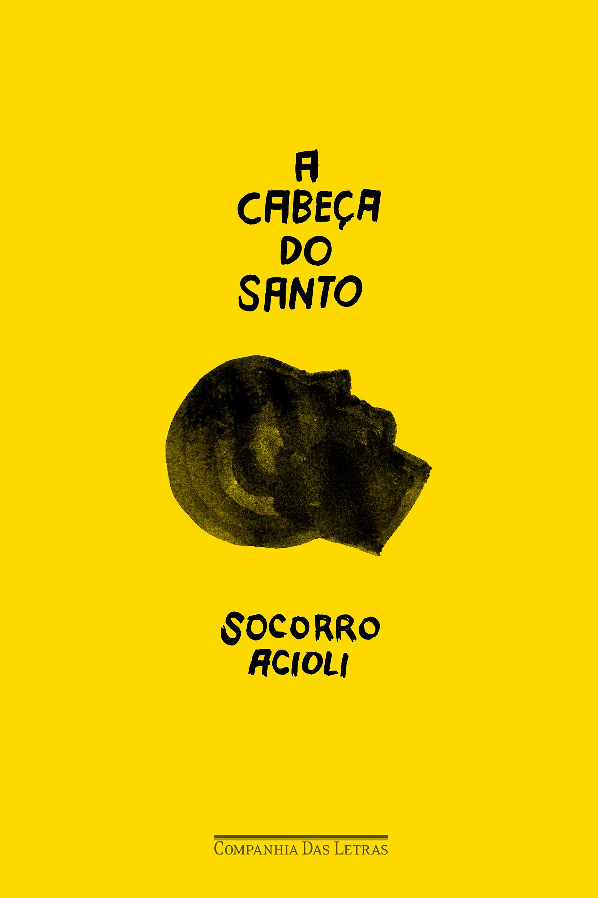

Blog do Diggo
"Um lugar para quem ama Livros, Histórias e uma Opinião duvidosa"
"Um lugar para quem ama Livros, Histórias e uma Opinião duvidosa"

Autora: Socorro Acioli
Gênero: Romance / Realismo Fantástico
A história acompanha Samuel, um jovem que viaja para a cidade de Candeia para cumprir o último pedido de sua mãe: reencontrar a avó que nunca conheceu. Ao chegar lá, ele encontra uma cidade marcada pela seca, pela pobreza e pela fé. Sem ter onde morar, Samuel passa a viver dentro da cabeça oca de uma enorme estátua inacabada de Santo Antônio.
"A Cabeça do Santo" mistura realidade e fantasia de forma leve e envolvente. A autora constrói uma narrativa cheia de simbolismos, trazendo elementos da cultura nordestina, da religiosidade popular e das dificuldades enfrentadas pelas pequenas cidades do interior.
Samuel é um personagem humano e fácil de acompanhar. Ao longo da história, ele amadurece e aprende mais sobre si mesmo e sobre as pessoas ao seu redor. Um dos pontos mais interessantes do livro é a forma como a fé aparece como esperança e necessidade de acreditar em dias melhores.
A escrita de Socorro Acioli é simples, delicada e emocionante. Mesmo sendo um livro curto, consegue transmitir reflexões profundas sobre solidão, amor, sonhos e humanidade.
4,5/5 - Muito Bom